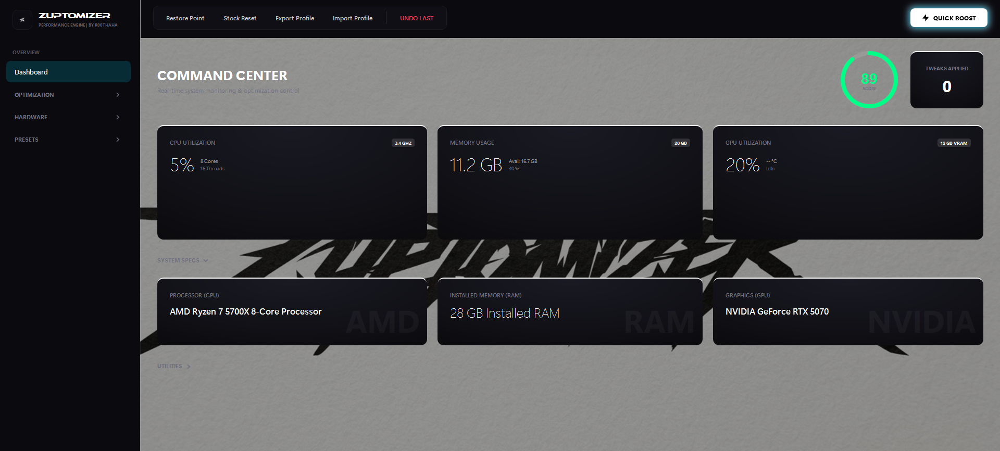

No credit card required
Scans hidden Windows caches, temp folders, crash dumps, and browser clutter to safely delete gigabytes of junk in seconds.
Instantly frees bloated background apps from hoarding your system RAM so multi-tasking remains silky smooth.
Disables invasive Windows tracking telemetry and wipes sensitive search logs, cookies, and auto-fill data.
< 75 MB Executable
No Background Spyware
Windows 7, 8, 10, 11 (64/32-bit)
Run Without Installation
Absolutely! Zuptomizer is 100% safe and virus-free. It's been tested and certified by major security vendors. We never collect personal data and all operations are performed locally on your PC.
Yes! Zuptomizer is 100% free to download and use. No credit card, trial limits, or hidden fees required.
Zuptomizer supports Windows 7, 8, 8.1, 10, and 11 (both 32-bit and 64-bit versions).